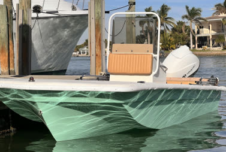
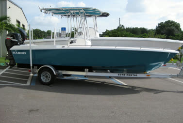
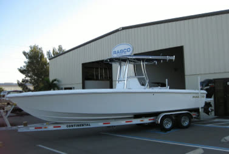

A private concept for the Rabco team
Pick the Buccaneer
before it's laid up.
Choosing between a Buccaneer 16, 21 and 28 from four photos is a big leap. This sketch lets a buyer switch hull size, colors and T-top, and see the layout from the helm.

CONCEPT MODEL · NOT TO SCALE Drag to turn · pinch or scroll to zoomCompare the hulls at scale
16, 21 or 28 feet side by side at true length, instead of four photos.
Choose colors and options
Hull color, deck color and T-top on or off, switched in one tap.
Give 37K followers something to click
An interactive boat is shareable in a way a photo is not.
The real thing, from your own pictures
The model above is rough on purpose. From your drawings and photos, it would match your real boat exactly.


Proof Sprint: one boat, made interactive
We build a private, accurate 3D view of one boat from your drawings and photos, ready to send to buyers or put on your site. $1,500 total, $750 to start.
Unofficial concept. The boat here is a simplified procedural model drawn by Viewfully for illustration. Sizes and details are approximate and are not Rabco Boats designs or a quote. Photos are shown only to illustrate this private concept and remain the property of Rabco Boats (rabcomarine.com). Nothing on this page is an offer or statement by Rabco Boats.